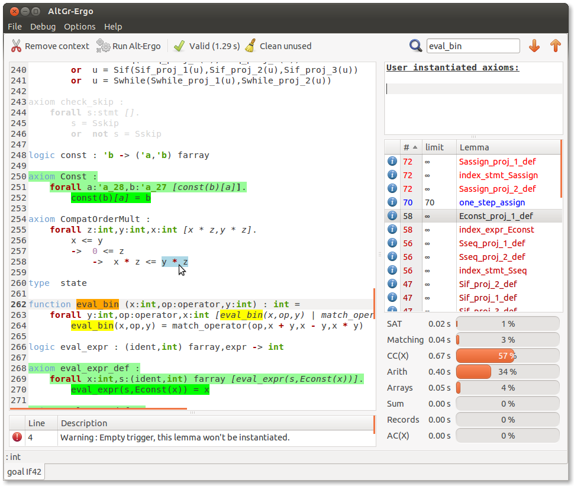
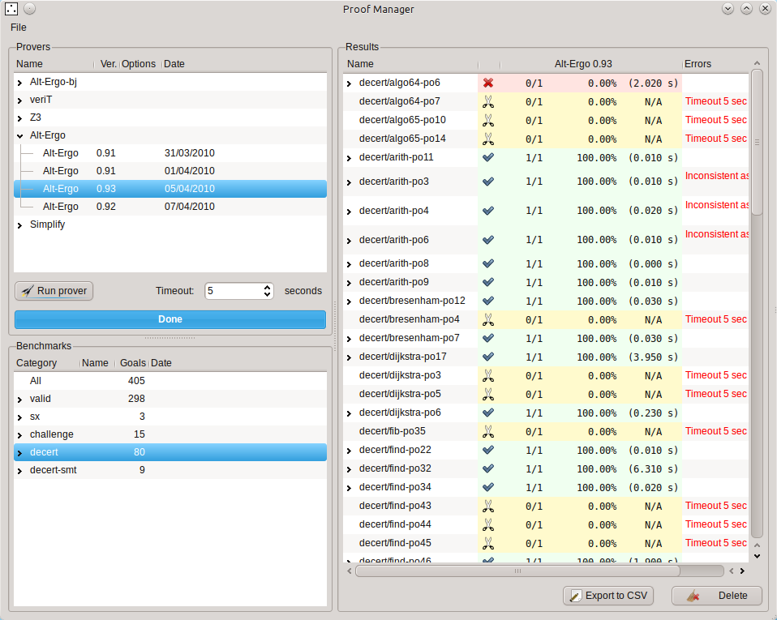
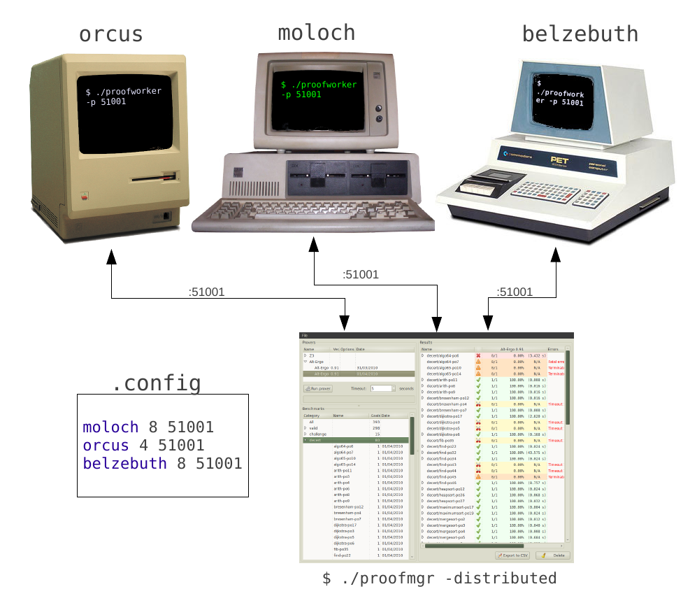

Kind 2
I'm one of the developpers of Kind 2, a multi-engine SMT-based automatic model checker for safety properties of Lustre programs. This tool is developped in collaboration with Adrien Champion, Christoph Sticksel and Cesare Tinelli.
Kind 2 is an open-source, multi-engine, SMT-based automatic model checker for safety properties of Lustre programs. It takes as input a Lustre file annotated with properties to prove invariant, and outputs for each property either a confirmation or a counterexample, a sequence inputs that falsifies the property.

Cubicle
I'm one of the developpers of Cubicle, an open source model checker for verifying safety properties of array-based systems. This tool is developped in collaboration with Sylvain Conchon, Amit Goel, Sava Krstić and Fatiha Zaïdi.
Array-based systems form a syntactically restricted class of parametrized transition systems with states represented as arrays indexed by an arbitrary number of processes. Cache coherence protocols and mutual exclusion algorithms are typical examples of such systems.
Cubicle model-checks by a symbolic backward reachability analysis on infinite sets of states represented by specific simple formulas, called cubes. Cubicle is based on ideas introduced by MCMT from which, in addition to revealing the implementation details, it differs in a more friendly input language and a concurrent architecture. Cubicle is written in OCaml. Its SMT solver is a tightly integrated, lightweight and enhanced version of Alt-Ergo; and its parallel implementation relies on the Functory library.
A particularity of Cubicle is its ability to infer precise and strong invariants through a combination of forward and backward model checking. More on the subject here.
Alt-Ergo
Alt-Ergo is an open source automatic theorem prover dedicated to program verification. It belongs the SMT family (Satisfiability Modulo Theories) and is based on CC(X) a congruence closure algorithm parameterized by an equational theory X. It can handle formulas in a polymorphic first order logic. The following theories are currently supported:
- Uninterpreted functions (empty theory)
- Linear arithmetic (integers and reals)
- Non-linear arithmetic
- Polymorphic arrays
- Enumerated datatypes
- Record datatypes
- AC (associative commutative) symbols
- Bitvectors
My contributions to this prover are interval arithmetic, proofs generations (unsat cores, explanations) and models. I'm also particularly involved in the arithmetic part of the prover. This tool is written in OCaml and developped by the INRIA, the Université Paris-Sud and is distributed under the Cecill-C license.
AltGr-Ergo
{kind=link}
AltGr-Ergo is a graphical frontend to the SMT solver Alt-Ergo written in GTK (with the library Lablgtk). It displays the AST after typing on which it alows several modifications to be performed:
- selection of hypotheses and axioms
- alterations of triggers
- deletion of (sub-)formulas when the validity remains implied
- dependencies between logical symbols
- manual (and possibly partial) instantiation of lemmas and axioms
- search
- display warnings (empty triggers)
- save modifications in a session and attempt to replay them even if the original goal has been modified
- highlight which hypotheses and axioms were useful to prove the goal
AltGr-Ergo also serves a purpose of profiling. It will show what parts and theories of the solver are being stressed when running. It will also report which lemmas are being instantiated (and how much) so as to allow the user to limit certain instantiations in case of divergence.
AltGr-Ergo is distributed with Alt-Ergo.
Proof-Manager
Proof Manager is a software to manage a base of benchmarks for SMT solvers. Its existence is justified by a certain number of needs in the team which works on Alt-Ergo. Its main objective is to provide a test platform both efficient and easy to use.
{kind=link}
Overview of functionnalities:
- Graphical inteface
- Allows the execution of provers in parallel (on multi-core and multi-processors marchines)
- Allows a distributed exection of tasks on a set of machines on the network
- Distant acces to results and datas
- Generate execution reports (HTML, CSV) regularly
Post-processing
Results comming from a large number of executions can be processed to be human readable and manipulable by the user through a graphical or text interface. For instance, the user can visualize results from a specific category and even compare them between different executions.
{kind=link}
Parallel and distributed execution
The main task performed by Proof Manager is to run a prover on a series of benchmarks. These runs are done in parallel by default if the machine has multiple cores of processors. If the user works in a distributed environnement, he can declare the machines that will be performing the computations and thus take advantage of all the computing power at his disposition.
Reusability
Proof Manager provied a complete command line interface which grant access to all its functions (adding/deleting provers, benchmarks, running tasks, etc.). This interface allows for example to write a simple script that will be executed every night to:
- Fetch Alt-Ergo source from a VCS
- Compile the last version if necessary
- Register the new prover in the base
- Run this prover on all benchmarks (or an interesting category such as non-regression tests)
- Generate an execution report (whith comparisons between previous version of the prover)
- Upload this HTML report on a web server
Download
Proof-Manager can be downloaded here.